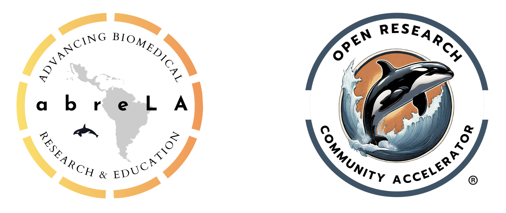

An interactive open-source course in muscle physiology and electromyography for undergraduates#
Authors: Erin McKiernan
Affiliation: Universidad Nacional Autónoma de México (UNAM), Open Research Community Accelerator (ORCA)
Date: February 16, 2025
Introduction#
An important part of undergraduate education in physiology is understanding the musculoskeletal system. This e-book and course is designed to teach students about muscle structure and function in an interactive way that combines theory and practice. Classes with information about muscle anatomy, mechanisms of contraction, and generation of electrical activity in muscle cells are accompanied by experimental practicals that introduce students to the technique of electromyogram (EMG) recording. Through these activities, students learn how to record the electrical activity of their muscles using EMG, and how EMG can be used to investigate aspects of muscle activation, biomechanics, force generation, motor unit recruitment, and muscle fatigue. In addition, computational practicals teach students how to analyze EMG recordings to quantify different elements of muscle activity, introducing and reinforcing important data science skills.
The chapters in this e-book each cover a different experimental or computational practical, complete with complementary theoretical lesson plans (including supplementary slide decks), experimental protocols, analysis code written in Python, and sample data sets for exploration. All materials are publicly available and openly licensed for reuse, both herein and at the following links:
GitHub repository: emckiernan/electrophys
Repo archive via Zenodo: [McKiernan, 2021]
Prior published work: [McKiernan and Medina Gómez, 2021]
Related work: [McKiernan et al., 2025]
How to use this e-book#
This e-book and its contents are designed to be modular in nature such that they can be reused and remixed in a variety of ways. The full suite of materials can be used sequentially to run a complete stand-alone course in muscle physiology and EMG. However, educators could instead use only some of the materials to supplement other course activities, depending on their needs. For example, an educator teaching a physiology course could run just the ‘EMG Basics’ practical (Ch. 1) to reinforce concepts seen in their class regarding electrical activity in muscle. Or, an educator teaching a data science course could use our sample EMG recordings and the ‘EMG Analysis’ practical (Ch. 3) to have their students apply analysis techniques to physiologically relevant data sets. Open licensing of all the materials also means that the materials can be modified as educators see fit. The lesson plans were originally designed with a Biomedical Physics curriculum in mind, but can be adapted to have more of a biological or physiological focus, depending on the intended audience.
The contents of this book (and sequence of activities if a full course), are as follows:
Ch. 1: Muscle physiology and EMG basics
Ch. 2: Graphing and visually exploring EMG data
Ch. 3: Filtering, processing, and analyzing EMG data
Ch. 4: Using EMG to measure muscle fatigue
Ch. 5: Quantifying muscle fatigue from EMG data
Ch. 6: Dual EMG recordings of muscle pairs
Ch. 7: Forearm EMG with dynamometry
Ch. 8: Analyzing forearm EMG and dynamometry
Educational specifications#
Level of study: Undergraduate
Degree programs: Biology, Biomedical Engineering or Physics, Medicine, Physiology, other applied or interdisciplinary programs (e.g. Applied Mathematics)
Semester or year: 4th semester, i.e. 2nd-year undergraduate
Courses: Human Physiology, or other related courses
Recommended prerequisites: Molecular & Cellular Biology
Licensing#
This e-book is licensed under the Creative Commons Attribution 4.0 International (CC BY 4.0) license. The following is a human-readable summary of the license.
You are free to:
Share — copy and redistribute the material in any medium or format
Adapt — remix, transform, and build upon the material for any
purpose, even commercially.
Under the following terms:
Attribution — You must give appropriate credit, provide a link to
the license, and indicate if changes were made. You may do so in any
reasonable manner, but not in any way that suggests the licensor
endorses you or your use.
Please cite:
McKiernan, E.C. & Project abreLA. [Insert chapter name.] In “An
interactive open-source course in muscle physiology and electromyography
for undergraduates”. [Insert DOI]. Retrieved [Insert date].
Any code shared as part of this project is licensed under The MIT License.
Permission is hereby granted, free of charge, to any person obtaining a copy of this software and associated documentation files (the “Software”), to deal in the Software without restriction, including without limitation the rights to use, copy, modify, merge, publish, distribute, sublicense, and/or sell copies of the Software, and to permit persons to whom the Software is furnished to do so, subject to the following conditions:
The above copyright notice and this permission notice shall be included in all copies or substantial portions of the Software.
Any data (e.g., EMG recordings) shared as part of this project are licensed under the Creative Commons CC0 1.0 Universal license. The following is a human-readable summary of the license.
No Copyright:
The person who associated a work with this deed has dedicated the work to the public domain by waiving all of his or her rights to the work worldwide under copyright law, including all related and neighboring rights, to the extent allowed by law. You can copy, modify, distribute and perform the work, even for commercial purposes, all without asking permission.
Funding#
This work is a product of Project abreLA, Advancing Biomedical Research & Education in Latin America, organized by the Open Research Community Accelerator (ORCA). This project has been made possible in part by grant 2024-347841 from the Chan Zuckerberg Initiative DAF, an advised fund of the Silicon Valley Community Foundation, awarded to ORCA. Earlier foundational work was supported by UNAM-DGAPA-PAPIME PE213817 and PE213219 awarded to ECM.
{kind=link}
References#
Erin C. McKiernan. Emckiernan/electrophys: electrophys v1.0.1. 2021. URL: https://zenodo.org/record/4554420, doi:10.5281/ZENODO.4554420.
Erin C. McKiernan and Lucía Medina Gómez. Building capacity through open approaches: lessons from developing undergraduate electrophysiology practicals. F1000Research, 10:187, 3 2021. URL: http://dx.doi.org/10.12688/f1000research.51049.1, doi:10.12688/f1000research.51049.1.
Erin McKiernan, Julieta C. Arancio, Eunice Mercado Lara, and Greg Tananbaum. Improving biomedical education in latin america through open science hardware: a case study of one medical school in mexico. 7 2025. URL: http://dx.doi.org/10.31219/osf.io/j7qtp_v1, doi:10.31219/osf.io/j7qtp_v1.